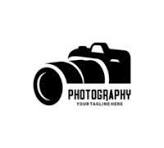

 0712345678
0712345678 nathan.photography@gmail.com
nathan.photography@gmail.com
0712345678nathan.photography@gmail.comWildlife photography is an art form that captures the beauty, behavior, and habitat of animals in their natural environment. As a wildlife photographer, I strive to create powerful images that not only showcase the splendor of wildlife but also raise awareness about the importance of conservation.
From the elusive big cats of Africa to the diverse birds of the Amazon rainforest, wildlife photography allows me to connect with nature in a way that brings these animals closer to the viewer. Every shot is a moment of patience, skill, and respect for the animal and its habitat.
Through my work, I aim to tell stories, raise awareness about endangered species, and inspire others to appreciate and protect the wonders of the natural world.
Majestic lions in the heart of the savannah, captured at sunrise.
An endangered rhino with its child in its natural habitat, emphasizing conservation efforts
A rare sighting of a leopard in the wild, blending into the environment.
"Nathan's photography captured the wild like I've never seen before. Truly remarkable work!" - Central Cee.

"Absolutely amazing! Every picture tells a story and brings you closer to nature." - Marcus Rashford.
"Incredible talent! Nathan's photos are breathtaking and impactful." - Volodymyr Zelenskyy